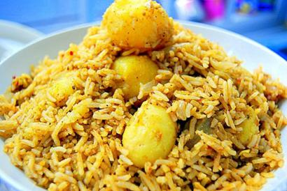

Rice-2 cups(160 ml electric rice cooker cup)
Onion-1 1/2
Potato (red potato look good) - 5 nos(small size chopped in small pieces)
Ginger-1.5" piece (grated)
Cumin seeds - 1 1/2 tsp
Cumin powder - 2 tsp
Garam masala -2 tsp
Green chilies - 3 (you could also use Jalapeno peppers too)
Lemon juice - juice from 1 & 1/2 lemons
Cilantro - handful
Curry leaves - 2-3 strands
Cook the rice separately and keep it aside.
Heat oil in a wide vessel and splutter some cumin seeds.
Saute the onions, green chilies & ginger.
Add finely chopped cilantro & curry leaves.
Add chopped potato and cumin powder. Mix it, cover and cook.
After the potato is well cooked, mix the cooked rice and garam masala.
Add salt and lemon juice.
At last add finely chopped cilantro and switch off.
Instead of cooked rice, you could add thick poha (aval) and make aval upma (batata powa) and serve with mint chutney for a quick breakfast, brunch or dinner.
You could also add some peanuts for some added crunch.